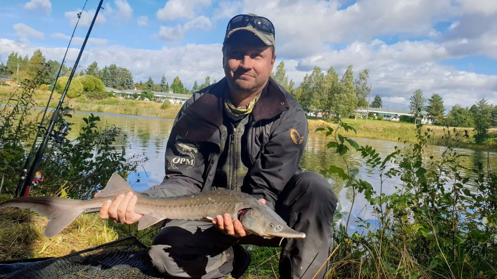
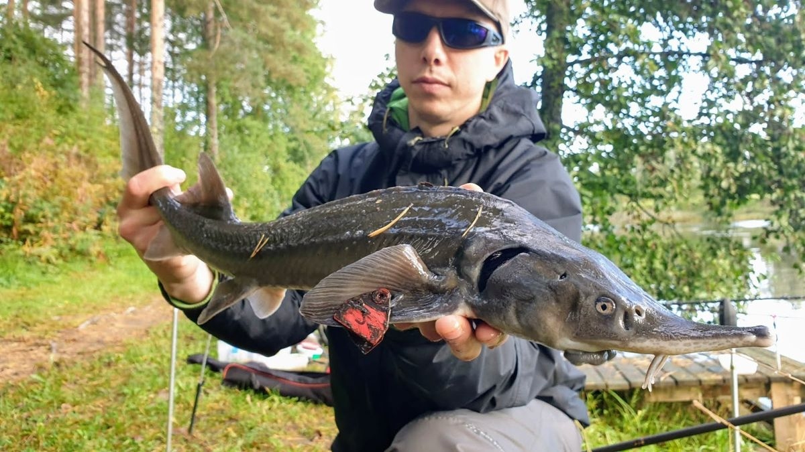
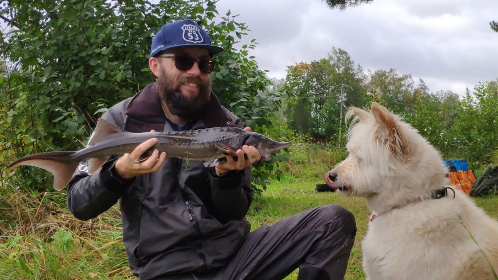
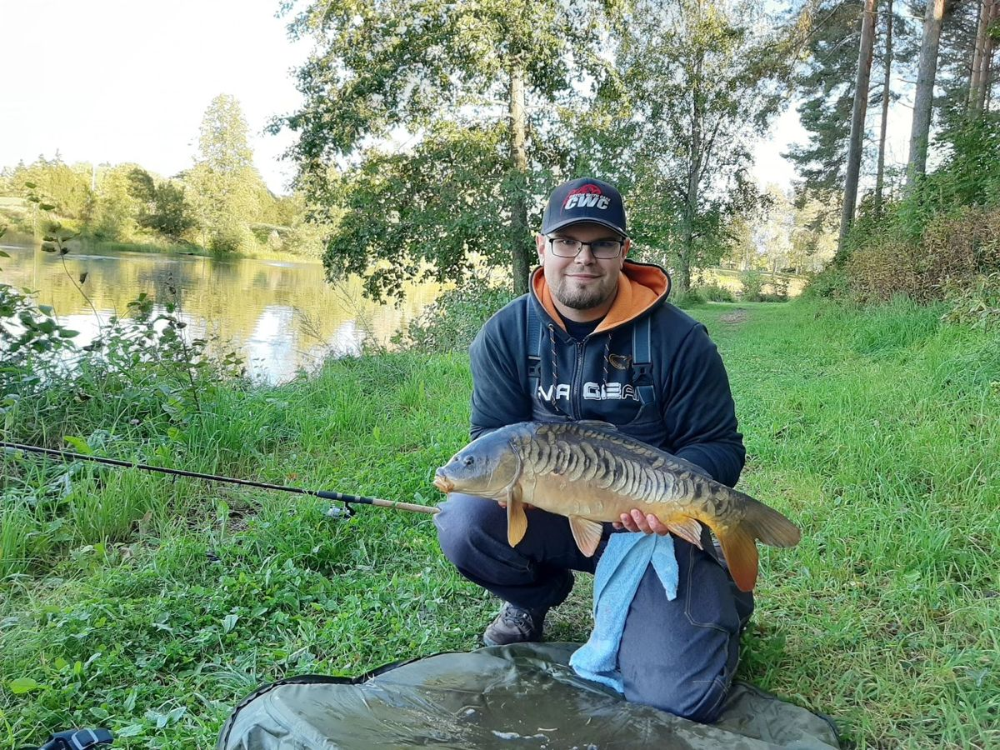
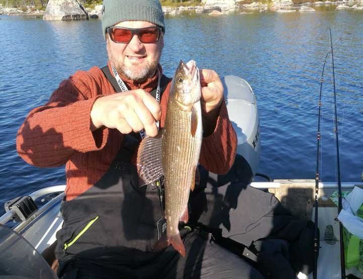
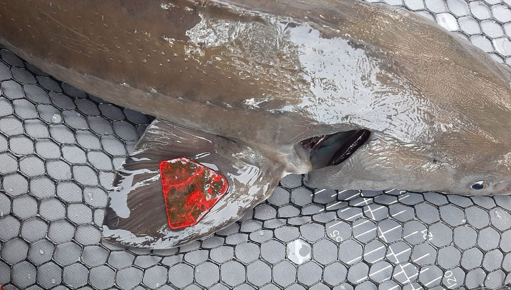
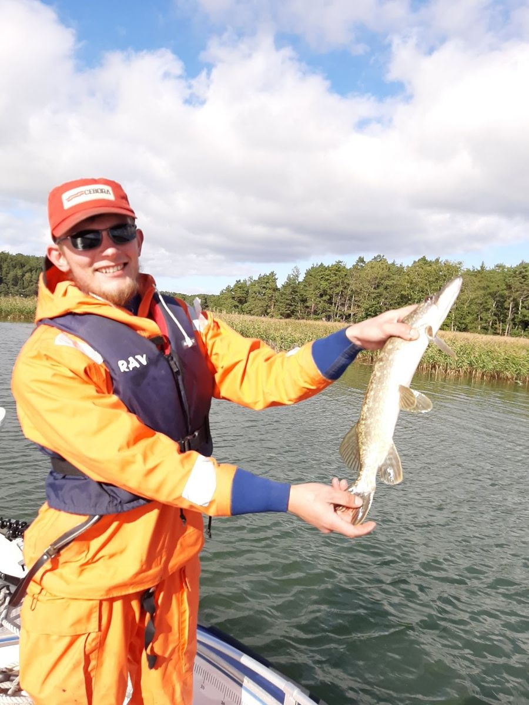
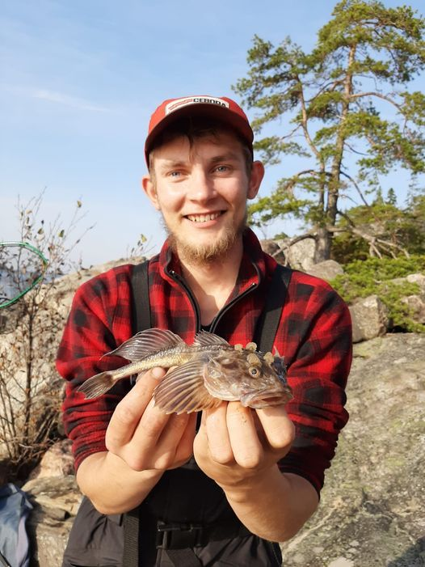
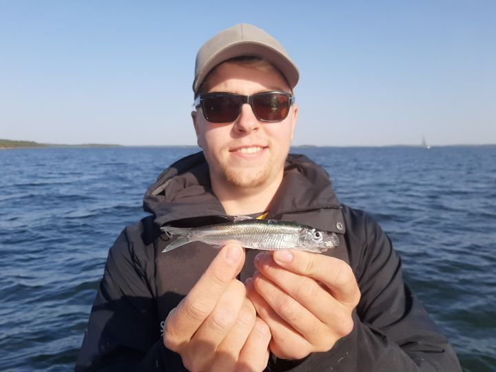
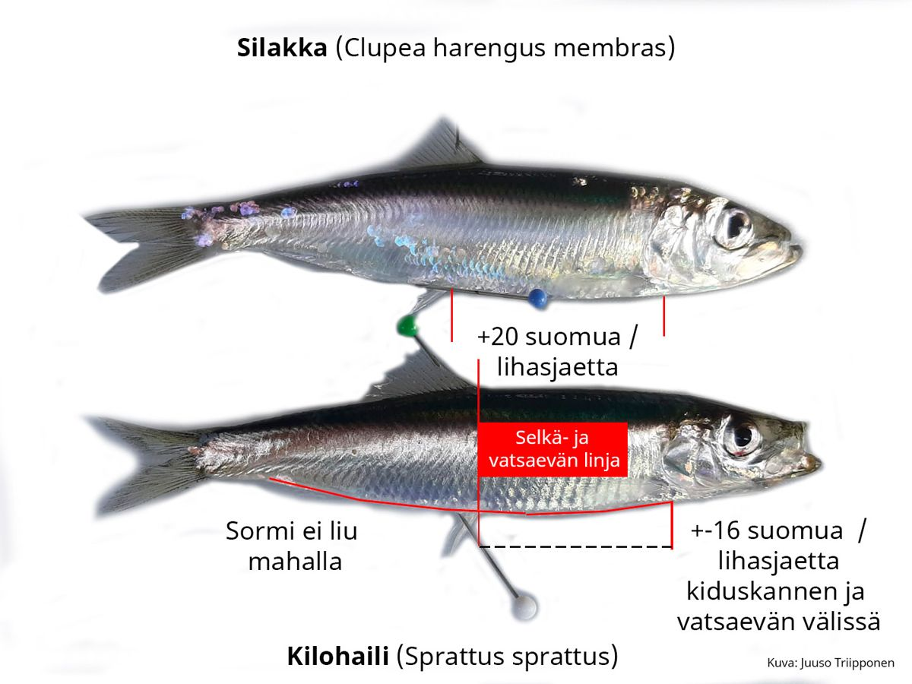

Blogitekstit · Lokakuu 2020
Syyskuu - mitä seuraavaksi?

Mitä sitä seuraavaksi? Elokuu jäi taakse ja tämän kuukauden jälkeen on alle 100 päivää vuotta jäljellä. Miikan kanssa aiheesta viestejä vaihdeltiin ja tultiin siihen lopputulokseen, että nyt alkaa se vaikea osuus. Mitä lajia yritetään pistelajeiksi 59 ja 60?
Edessä on Miikalla harjuksen pyynti ja itselläni siperiansammen, näiden jälkeen alkaa se vaikea osuus, mitä seuraavaksi?
Juuso aloitti Ollin kanssa kuukauden reissulla Korkeakoskelle. Spinflugalla onnistuivat molemmat nappaamaan lohipisteet, Juusolle laji 56 ja Ollille 46 samalla myös molemmille uudet elämänpisteet, huikeeta!
"Yhteensä noin 24 h. Tällä reissulla 10 h heittoa ennen kun pysyi haaviin asti. Toki siihen päälle meni aika paljon aikaa perhonsidontaan ja sen opiskeluun mutta eipä mennyt hukkaan." -Juuso
"Olihan se ihan eri luokan kala siiman päässä kuin mikään vanhoista eliksistä. En uskonut hetkeäkään, että voisin sen saada, mutta sainkin uittaa peräti kolmea, joista yksi oli tämä pistekala." -Olli
Ollilla on edessä lapinreissu Miikan kanssa. Lajit rautu, kirjoeväsimppu, harjus ja made listalle niin saamme platinakerhoon yhden uuden jäsenen. Katso tästä kaikki platinakerholaiset.
Miikalle harjus ja uusi Suomenennätys olisi taas hänen nimissään.
Mikael lähti harmaanieriä jahtiin Inarinjärvelle velipoikansa kanssa. Vertikaalijigausta ja uistelua luvassa, mielenkiinnolla odotetaan nouseeko tavoitelaji ja millaisia sivusaaliita tulee.
Syyskuun alussa saapui myös Myllykosken karppilammelle, eli Ponnille yksitoista Siperiansammen ja kitasammen eli belugan yhdistelmiä.
Lajikalastuksen virallisen pitäjän Skes ry:n toimesta laji suljettiin pois lajilistalta koska on hybridi. Hyväksyn tämän päätöksen, mutta kritisoin sitä kovaäänisesti seurannan sivulla ja Fongaus-ryhmässä Facebookissa.
Nyt siperiansammen kalastuksen sivusaaliina saatu hybridi tuo ilon saamisesta, mutta ei lajipistettä. Palataan tähän tekstin lopussa.
Perusteluni miksi lajipiste pitäisi lajista saada ovat:
- laji yksilöitä on yksitoista kappaletta istutettu suljettuun lampeen kalastusta varten
- merkityt kalat on helppo tunnistaa lammessa jo uivista siperiansammista evässä olevasta nimilätkästä. Mitä jos lätkä irtoaa evästä?
- Myllykosken sammet laskettaisiin yhdeksi pisteeksi kuten taimen-, karppi-, siika- ja lohilajit, vaikka kyseessä on sampien osalta eri lajit.
Erottaisitko sinä lammen kaksi sampilajia toisista vain ulkonäön perusteella?


Syyskuun kolmastoista lähdettiin Timin ja Mikon kanssa ponnille sampijahtiin. Timi avasi pelin kymmenen minuuttia ensimmäisen virityksen heittämisestä. Siperiansampi, viime vuoden istukas nappasi kelluvaan boilieen.


Itse karkuutin ison kalan, sain pari muuta tärppiä ja lopulta kolmas kala pysyi kiinni. Ilo oli ylimmillään kun vedestä haavin pohjalta paistoi punainen lätkä kalan evässä, jos olisi ollut keltainen lätkä, no jätetään tämä tähän.
Punaisellä lätkillä merkityt kalat on vuoden 2019 istukkaita, valitettavasti aikaisemmat sampierät ovat tietojen mukaan menehtyneitä. Lopulta myös Mikolla kilahti, siis kello vavan varressa. Elämänpisteeksi nousi myös hänelle viime vuonna istutettu siperiansampi.
Näiden lisäksi nousi Timille turpa ja Mikolle suutari sekä yksi siimaan sotkeutunut sampi.


Näin tunnistat siperiansammen hybridilajitoverista
- Siperiansammella kiduskaari on "vajaa" kun hybrireillä se peittää kidukset, tosin myös siperiansammella voi peittyä kokonaan.
- punainen lätkä 2019 istutetut siperiansammet
- keltainen lätkä + nimi 2020 isutetut hybridit
- lammessa ui ainakin kaksi lätkätöntä siperiansampea
Ponnilla oli samaan aikaan myös Youtube vloggari Defe, eli Jesse Haaraoja. Hänellä oli päivän tavoitelajina karppi ja kotiin päästyäni messanger kilahtikin.


"Napsahti mullaki. 5,3 kiloa peilikarppia. Nyt tehdään jotain oikein, kun ennätykselliset kolme näitä oli kiinni tänään, mutta vain tämä suostui tulemaan näytille. Vaikka ensimmäisen karpin sain 30-vuotispäivänäni, niin tämä oli paljon hienompi kokemus ja kala, jonka olisin silloin halunnut saada. Nyt kelpaa." -Jesse
Defen Youtube-kanavaan voi tutustua tästä.
Inarinjärvellä Mikael oli onnistunut saamaan harjuksen, kun toisessa käsivarressa Olli ja Miika tuskaili harjusjahdissa. Onneksi Ollin platinakerhoraja lähenee kirjoeväsimpun, mateen ja raudun noustua listalle.


Ponnille vei myös Juuson tie. Ensimmäinen kuva kilahti vähän jälkeen puolen päivän, siinä fiilisteltiin tyyntä lampea ja pyynnissä olevia kolmea virveliä.
"Just tuli kolmas suutari ja ahven matonipulla."
"8 suutaria, 3 ahventa, 1 lahna..." -Juuso


"Etäopiskelun mahdollisuuksia tämäkin. Ajoin aamulla Kouvolaan ja seurasin luentoa lammen rannassa samalla kun ongin. Nyt tiedän, että onkimista ja opiskelua on varsin hankala yhdistää niin ettei jompikumpi kärsisi toisesta...😄 Kannatti kuitenkin tällä kertaa tämä järjestely, sillä sampi nappasi illalla puoli tuntia ennen lähtöä." -Juuso
Lopulta klo 18.08 Juuso sai tavoitteensa täyteen muutaman suutarin, lahnan ja ahventen jälkeen. Hienoa oli vastaanottaa lopulta kuva punalätkäisestä siperiansammesta, joka lepäsi vapautusmatolla odottamassa takaisin laskemista. Juusolla nyt kasassa upeat 57 lajia ja tasatilanteeseen nousu Miikan rinnalle. Vain miekkasärki uupuu hänen listalta ja Miikalta harjus jotka löytyvät molemmat minun listalta.
Molemmat ovat vielä mahdollisia, harjus vaikka 31.12.2020 pilkillä kuten miekkasärkikin. Jälkimmäinen olisi huikea veto, lajia nimittäin pilkitään ulkomailla syvänteistä. Ehkä Nuijamaajärvestäkin sen voisi tavoittaa, pidetään peukkuja jos Juuso ja Olli lähtevät sitä yrittämään.
Syyskuun seuraava retki tarjosi Juusolle ja Ollille veneretkeä Airiston aalloille. Silmäkulmassa siinsi turskapiste. Kova keli pakotti fongarit haukijahtiin ja saalistakin nousi.


23.9.2020 tuli Skes ry:n direktoraatilta päätös:
MUUTOS LAJIREKISTERIIN
Lajirekisterin direktoraatti on huolellisen ja perusteellisen keskustelun jälkeen tehnyt päätöksen, joka omalta osaltaan vaikuttaa rekisteriin, myös taannehtivasti. Myllykosken sammet diskataan vuosirekisteristä pysyvästi. Sen sijaan itse sampilajit eivät tietenkään poistu mahdollisten saatavien lajien joukosta.
Päätös ei ollut helppo, koska moni on nähnyt vaivaa ja käyttänyt aikaa lajin pyydystämiseksi. Siksi pahoittelemme kovasti jälkikäteistä päätöstä, mutta esiin tulleet seikat olivat niin painavat, että päätös tehtiin tässä vaiheessa.
1. Lammessa on vain kymmenkunta sinne istutettua yksilöä. Se ei millään täytä kriteerejä vapaissa olosuhteissa elävistä suomalaisista kalalajeista. Näitä harvoja yksilöitä pyydetään toistuvasti siiman päähän, joka kyseenalaistaa myös lajikalastuksen eettisen puolen.
2. Lammen sammet eivät pärjää ravintokilpailussa toisten lajien kanssa, joten ne vain laihtuvat, tulevat helposti mäskille, mutta kuitenkin oletettavasti kuolevat talven oloissa pois.
3. Nyt lammelle on ryhdytty istuttamaan hybridejä. Niistä ei tulla antamaan lajipisteitä. Sampilajien erottaminen toisistaan on hyvin vaikeaa. Ennen pitkää tämä voisi aiheuttaa lammen kohdalla sekaannuksia, vaikka kalat lähtökohtaisesti ovatkin merkittyjä.
4. Lajirekisterin ylläpitäminen on tarkoitettu pysyväksi. Näin ollen esimerkiksi jo tulevana vuonna uusia ennätyksiä mahdollisesti yrittävät lähtisivät takamatkalta, koska kohtuullisen helppo sampipiste jäisi pois, kun lammen siperiansammet ovat todennäköisesti menehtyneet.
5. Vertailun vuoksi: jos joku keksisi istuttaa luvallisesti kaksi monnia johonkin lampeen, pitäisikö niiden siiman päähän saamisesta tulla vuosilajipiste? Lajin tulee lähtökohtaisesti olla kaikkien pyydettävissä, esiintyä mieluusti monessa paikassa (poikkeuksena Lohjan viisipiikit) sekä lisäksi mieluusti kalastettavissa myös ilman erillistä maksua.
6. Lajikalastuksessa jokainen voi luoda sääntönsä itse. Myös aurinkoahven on laskettu vuosirekisterin kohdalla ei-hyväksyttäviin lajeihin, koska SKES ei millään tavoin halua edistää vieraslajien levittämistä Suomen vesistöihin. Sen sijaan niiden pois pyytämistä suositellaan kovastikin.
Toivomme ymmärtämystä tälle vaikealle päätökselle. Pienenä lohdutuksena SKES on päättänyt, että rekisteriin siperiansammen ilmoittaneet voivat osallistua Lajikalastuksen SM-kisaan 2021 ilmaiseksi.
Helsinki 22.9.2020
SKES ry
Vuosilajirekisterin direktoraatti: Jukka Halonen (puheenjohtaja), Markus Ratinen, Lauri Urho, Jussi T. Pennanen, Olli Varhimo (Suomen Lajikalastajat ry).
Seuraavaksi odotetaan virallisia sääntöjä seurantaan. Tämä tarkoittaa myös sitä, ettei vanhat ilman virallisia sääntöjä tehdyt seurantatulokset ole vertailukelpoisia ja uusi ennätys tehdään jonkun toimesta vuonna 2021, minä se en ole.
Nyt siperiansammen tai hybridisammen saaminen tuo ilon saamisesta, mutta ei lajipistettä.
Myllykosken Ponnin lajisto seurantapisteiden osalta on jatkossa seuraava; karppi, ruutana, suutari, turpa, säyne, ahven, särki, sorva, pasuri, lahna, hauki ja ehkä joku muu laji.
Sulkemalla lisäksi Kuopionkin sammet pois lajirekisteristä, on se yksi syy olla menemättä kyseiseen kaupunkiin kalalle. Nyt ajatellaan vain sitä, onko lajia kuinka monta yksilöä lammessa vai ei. Kukaan ei ajattele sitä, että se jättää pois syyn kalastaa kyseisessä paikassa ja näin lajikalastajat eivät kalapaikkaan todennäköisesti mene.
Itse en ainakaan.
Tämä myös tarkoittaa sitä, että kyseinen kalapaikka jää ilman lajikalastuksen huomiota. Itselleni kalaretkissä yksi osa on uusiin ihmisiin tutustuminen ja heidän kanssa juttelu, tätä on tullut tehtyä Myllykoskella ja esim. Pahalammella.
En näe syytä sulkea lajeja pois jotka on istutettu luvan kanssa paikkoihin joihin kaikilla on mahdollisuus mennä kalalle. Kuopion sammet ovat eläneet jo useita vuosia ja todennäköisesti elävät toisen mokoman.
Kuten lajikalastuksen Suomen ennätyksen aiempi haltija Timi Laitinen tyylikkäästi kirjoitti, direktoraatti nosti kissan pöydälle, mutta häntä roikkuu vielä pöydän reunan yli. Pikaisen kokoontumisen myötä sampisääntö täsmennetään koskemaan KAIKKIA LAMPIA.
Esimerkiksi Valkeisen sampiin osuvat kaikki alkuperäisen diskauksen perusteet sillä poikkeuksella, että nämä Valkeisen muutamat yksilöt selviävät ilmeisesti ravintokilpailussa. Se ei kuitenkaan muuta olennaisimpia pointteja toiseksi.
Jälleen kerran direktoraatti korostaa, että nämä säännöt ovat hyvin vaikeita määritettäviä. Joihinkin muihin lajeihin sopii joku kohta, jolla lampisammet on suljettu listalta pois. Vastaavasti ne eivät täytä kuitenkaan kaikkia perusteita. Samalla kertaa tarkoitus on pitää lajimäärä mahdollisimman runsaana, mutta kuitenkin tasapuolisena, eettisesti kestävänä ja ennen muuta lajien omatoimista siirtoistuttamista hillitsevänä.
Muiden lampien sampikiellon päätös oli sikäli helpompi, että rekisteriin ei niitä ole ilmoitettu ainuttakaan.


Loppukuusta Juuso täräytti jackpotin. Seurantahistorian ensimmäinen todistetusti pyydetty ja tunnistettu kilohaili.


Tässä Luonnonvarakeskuksen Lauri Urhon viesti kokonaisuudessaan:
"Kunpa aina olisi kalat näin hyvin esillä ja tuosta tuoreena otetusta kuvasta nuo vatsasuomutkin paremmin näkyvät sekä voi arvioida sormien perusteella koon, mikä yleensä olisi hyvä olla tiedossa.
Kilohailiksi voi siis nyt tuomita kuvista, ilman että tarvitaan kalaa.
Tosin kyllä tuo on hyvä periaate, että kala säilytetään pakastimessa (tai viinassa), kun tarvitaan varma määritys."
Päädyimme fongaus-ryhmässä seuraavaan mahdolliseen tunnistustapaan kilohailin osalta


- kilohaililla karhea vatsa missä sormi ei liiku vaan tökkää
- kilohaililla +-16 suomua vatsaevän ja kiduskannen, silakalla +-20 ja yli
- Silakan vatsan karkeuksia saa etsimällä etsiä sieltä takaosasta, eivätkä ne karheimmillaankaan ole lähelläkään kilohailin kokonaisvaltaista karkeutta.
Tästä tulikin pisteetön kuukausi. minulle...
Lokakuu, Longinojan täsmäkunnostuksien ja taimenten kuduntarkkailun lisäksi yritetään paria lajia siinä sivussa...Seuraa ennätyksen etenemistä
Pidän kirjaa lajilistasta ja tarkemmasta retkidatasta Google -taulukossa, joka löytyy jokaisesta ennätysyrityksen postauksesta.
Tästä linkistä taulukko avautuu uuteen ikkunaan.
Seurantatilanne löytyy myös blogini oikeasta yläreunasta.
Vuoden aikana ennätysyrityksessä kulkee mukaan myös tämä kalataitelija-graaffikko Sakke Yrjölän suunnittelema SPECIES FIN 53 -merkki.
Paitakulmassa painatin pipoon ja lippikseen saman merkin. Tavoitteeni on saada aikaiseksi 53 saaliskuvaa tekstin alussa tekemääni taulukkoon joissa kaikissa kuvissa näkyisi tuo kyseinen tunnus.
Paitakulma on Suomalainen perheyritys, joka haluaa panostaa laatuun ja asiakastyytyväisyyteen. Tutustu yrityksen palveluihin tästä.
Juha Salonen Juuso Triipponen kilohaili Korkeakoski Kymijoki lohi Miika Kovanen Mikael Jaakkolla myllykoski Olli Salonen siperiansampi